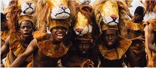
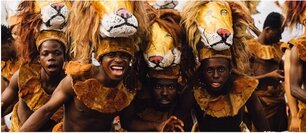

Carnival Updatez
Background information

 


What is the calabar carvival about
Calabar Carnival is known as the pride of Nigeria. For the entire month of December the city of Calabar puts on numerous carnival events, displaying africas
rich cultural heritage and often using creative themes to promote unity, peace, green energy, agriculture t mention the least. The Calabar Carnival is without a
doubt the biggest, best and longest tourism event in West Africa. It attracts over two million revelers and features participants from over 25 different
countries. The Battle of the Bands and Street Parade is even broadcast to a television audience of around fifty million.
Where is Calabar?
Calabar which is also known by the name Canaan City, is a city in south-eastern Nigeria. Calabar is actually the capital city of Cross River State. Calabar sits
adjacent to the Calabar and Great Kwa Rivers as well as the creeks of the Cross River.
History of carnival
What is the history of carnival? My fellow carnival lovers, many of you may not know that the beginnings of carnival are thought to have started in Africa!
That’s right many, believe that carnival began some 5000 years ago in Egypt and Sumeria. Carnival was celebrated by many pagans societies across the
world and was even adopted by the Roman Empire which spread it across the world. It was again adopted by the Catholic Church and the
celebrations spread even further to the Americas and even as far as India. It’s hard to believe that this global phenomenon celebrated in over 52 countries had its
humble beginnings in Africa.

What is the History of Calabar Carnival
The origins of Calabar Carnival started back in 2004 when Donald Duke the governor of Cross River, Nigeria, decided it would be the perfect way to boost
tourism and the local economy. He wanted to turn Cross River State into the number one tourist destination for Nigerians. He wanted to create a carnival
festival that would heavily showcase the local heritage and the Calabar Carnival was a wild success! Today the carnival attracts millions of visitors
throughout the entire month of December and has given the local economy a huge boost. Ironically the biggest and best carnival in Africa, the birthplace of
carnival, is actually one of the youngest carnivals in the world. No doubt this carnival festival will be a huge part of the history of Calabar.